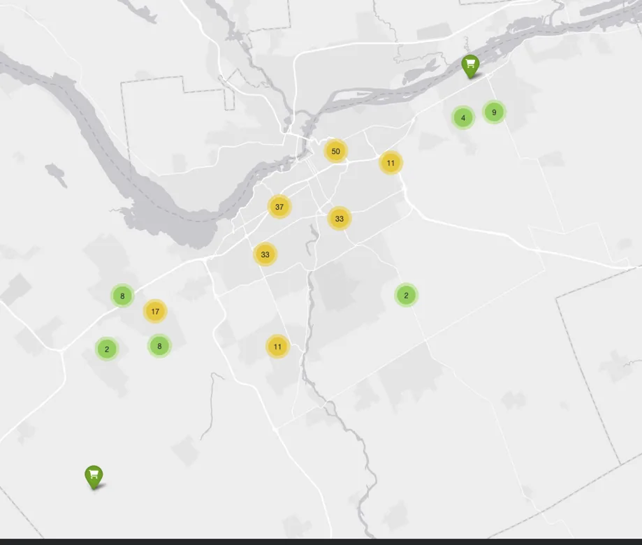
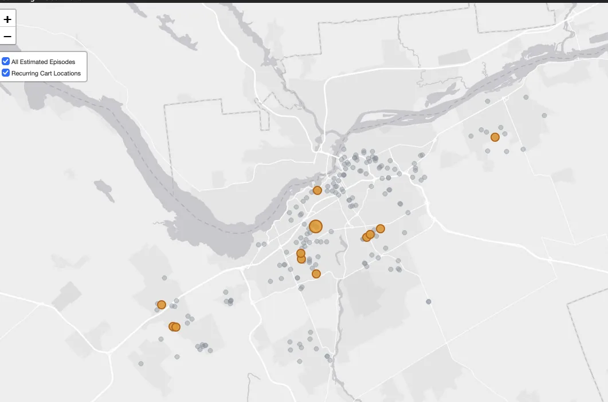
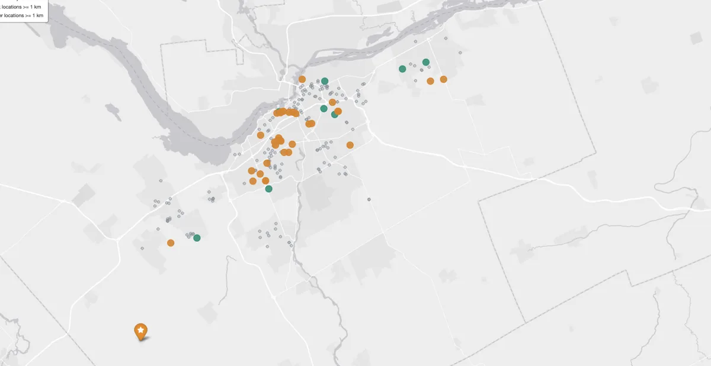
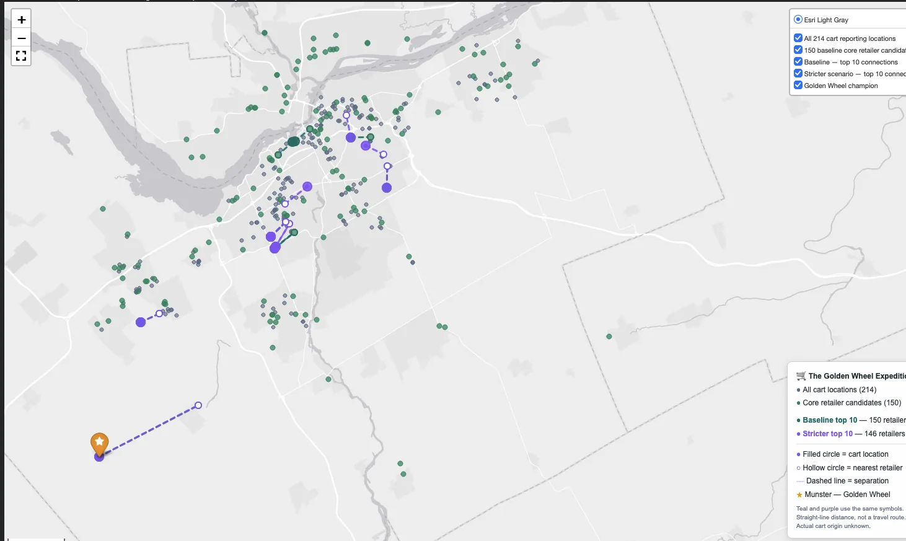
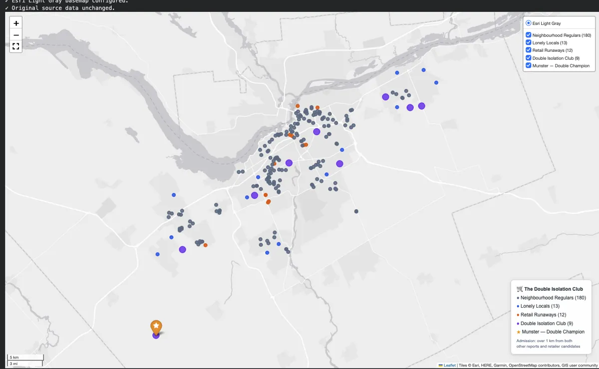
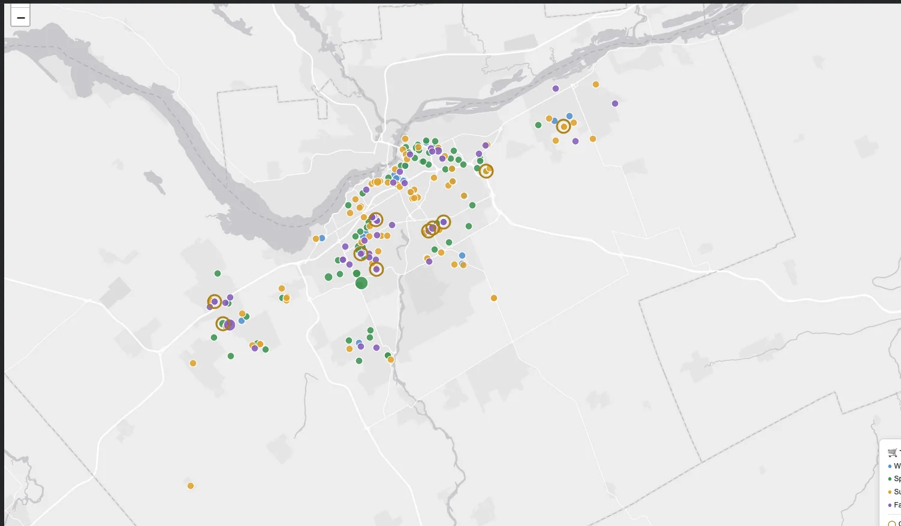
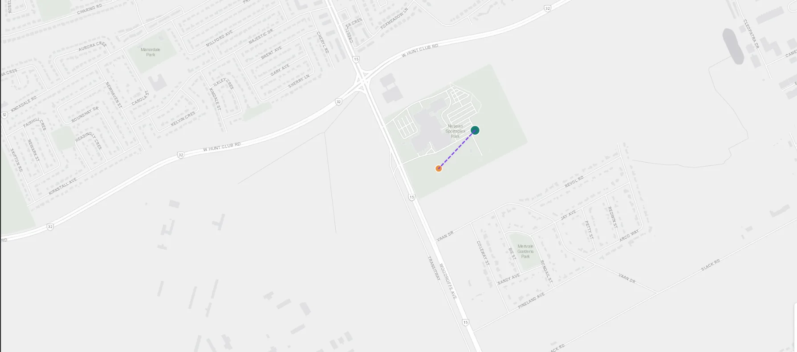

Field Map 001 · Chapter 5
Known Habitats
The geographically identifiable reports and the first attempt to distinguish report occurrences from known locations.
Open interactive map ↗Seven maps. Several questionable cart personalities. Each map is a saved, interactive Folium visualization extracted from the final research notebook—not a recreation from guessed coordinates.
Each map opens in a separate tab. The Leaflet controls and underlying layer toggles are retained. Live background map tiles require an internet connection; hover and click behaviour may differ on mobile.

The geographically identifiable reports and the first attempt to distinguish report occurrences from known locations.
Open interactive map ↗
Reporting addresses and provisional repeat episodes, under the study’s transparent same-address 21-day heuristic.
Open interactive map ↗
The most isolated recorded addresses. Nearest other report location is not a reconstructed cart journey.
Open interactive map ↗
Core-retailer candidates, sensitivity scenarios and Munster's exceptional separation. Later candidate listings are not verified 2025 cart origins.
Open interactive map ↗
Four geographic personalities determined by proximity to other report locations and extended retailer candidates.
Open interactive map ↗
Four seasonal layers for 247 geocoded reports, grouped into 224 address-season markers, with ten multi-season locations.
Open interactive map ↗
The two nearby Park Maintenance reporting locations, 225.3 metres apart and two days between estimated episode starts.
Open interactive map ↗